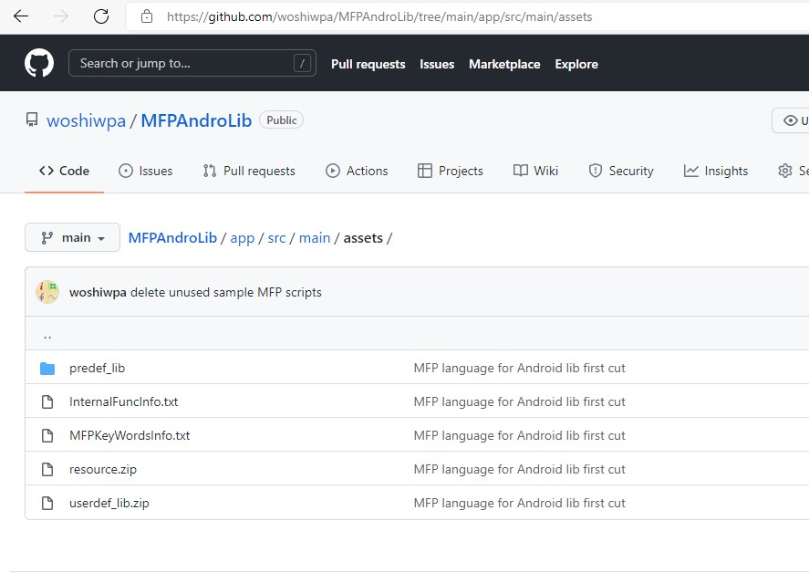

眾所周知，可編程科學計算器是基於MFP編程語言的強大工具。MFP語言是一種面向對象的腳本語言，它提供了豐富的函數，可以用於二維遊戲開發，復數計算，矩陣計算，高價積分，二維三維和極坐標圖像繪制，字符串，文件操作，JSON數據讀寫以及基於TCP和WebRTC協議的通信編程。基於Apache 2.0許可，MFP現在已經開放源代碼。所以任何個人或公司均可以利用這種編程語言。顯然，如果能夠將這種編程語言整合進自己的應用，開發人員可以節省大量的時間和資源。
MFP安卓庫代碼可以在https://github.com/woshiwpa/MFPAndroLib下載。並且，從2.1.1版開始，可編程科學計算器開始提供二進制MFP安卓庫文件。每次用戶升級到新版後，可編程科學計算器會自動將最新版的MFP安卓庫拷貝到安卓設備內存的Android/data/com.cyzapps.AnMath/files/AnMath目錄中。用戶也可以在啟動可編程科學計算器後點擊“在電腦上運行”圖標，手動拷貝MFP安卓庫文件。
將MFP庫嵌入到Android項目中需要兩個aar二進制文件。一個是MFPAnLib-release.aar。另一個是google-webrtc-x.x.xxxxx.aar。請將它們從安卓設備內存的AnMath文件夾復制到目標Android項目中。開發人員可以將它們放置在任何地方，只要gradle可以找到它們就沒有問題。假設它們保存在名為app的模塊的libs文件夾中。在這種情況下，開發人員需要在應用模塊的build.gradle文件中添加以下兩行：
implementation files('libs/google-webrtc-1.0.19742.aar') // google-webrtc aar在未來可能會發生變化
implementation files('libs/MFPAnLib-release.aar')
除了兩個二進制文件之外，MFP還有一些預定義的腳本程序。這些腳本程序為開發人員提供了許多有用的功能。在可編程科學計算器中，預定義的腳本被壓縮在安卓設備內存的Android/data/com.cyzapps.AnMath/files/AnMath文件夾內的assets.7z文件中。在assets.7z內有一個名為predef_lib的文件夾。開發者應將整個predef_lib文件夾復制到開發者自己的項目的assets文件夾中。
開發者的應用的Application的實現的onCreate函數應該包括以下代碼：
public class YourAppImplementationClass extends androidx.multidex.MultiDexApplication {
@Override
public void onCreate() {
super.onCreate();
... ...
MFPAndroidLib mfpLib = MFPAndroidLib.getInstance();
// initialize函數有三個參數。第一個參數是一個Application Context；第二個參數是你的App
// 的共享的設置（shared preference）的名字，最後一個是一個布爾值，true表示你的MFP代碼和
// 資源文件均保存至你的應用的assets中，false表示你的MFP代碼和資源文件保存在安卓設備
// 本地內存中。
// 以下代碼適用於將MFP代碼和資源文件保存在應用的assets中的情況。如果你想把MFP代碼和資
// 源文件保存在安卓設備的本地存儲中，請放回下面一行已經註釋掉的代碼並傳送false給
// initialize函數的第三個參數。
// MFP4AndroidFileMan.msstrAppFolder = "My_App_MFP_Folder";
mfpLib.initialize(this, "Your_App_Settings", true);
MFP4AndroidFileMan mfp4AnFileMan = new MFP4AndroidFileMan(getAssets());
// 平臺的硬件管理器必須最先被初始化。這是因為它需要在裝載代碼時用於分析代碼中的標註。
// 其它的解釋器運行環境管理器可以在運行程序之前再初始化。
FuncEvaluator.msPlatformHWMgr = new PlatformHWManager(mfp4AnFileMan);
MFPAdapter.clear(CitingSpaceDefinition.CheckMFPSLibMode.CHECK_EVERYTHING);
// 在啟動時先裝載預定義的MFP腳本
mfp4AnFileMan.loadPredefLibs();
}
... ...
如上所述，有兩種方法可以保存用戶定義的MFP腳本和相關資源文件。一個是保存在模塊的assets中。在這種情況下，開發人員必須在模塊的assets中創建一個名為userdef_lib.zip的壓縮文件。此壓縮包內有一個名為scripts的文件夾。所有用戶定義的MFP腳本都在其中。
當開發人員編寫MFP腳本時可能需要裝載一些資源，比如圖像或者聲音。在這種情況下開發人員需要創建另外一個名為resource.zip的壓縮包。該壓縮包也放在assets中，資源文件保存至該壓縮包內。
以下代碼展示了正確調用資源文件的完整方法。
@build_asset copy_to_resource(iff(is_sandbox_session(), get_sandbox_session_resource_path() + "sounds/drop2death.wav", _
is_mfp_app(), [1, get_asset_file_path("resource"), "sounds/drop2death.wav"], _
get_upper_level_path(get_src_file_path()) + "drop2death.wav"), "sounds/drop2death.wav")
if is_sandbox_session()
play_sound(get_sandbox_session_resource_path() + "sounds/drop2death.wav", false)
elseif is_mfp_app()
play_sound_from_zip(get_asset_file_path("resource"), "sounds/drop2death.wav", 1, false)
else
play_sound(get_upper_level_path(get_src_file_path()) + "drop2death.wav", false)
endif
上述代碼的意思是，if ... elseif ... else ... endif程序塊告訴MFP當前腳本需要裝載一個叫做drop2death.wav的聲音文件。如果當前代碼是在一個沙盒中運行，該wav文件被保存至沙盒會話的sounds文件夾中。註意這裏的沙盒是MFP並行計算的術語，意思是從遠端的MFP實例發送到本地運行的call程序塊。如果當前代碼在MFP應用中運行（這也是當前示例的情況），則wav文件將保存在應用assets.zip文件的sounds文件夾中。請註意，函數play_sound_from_zip的第三個參數是1，這意味著函數get_asset_file_path返回安卓應用的assets路徑。如果當前代碼在本地設備內存中運行，例如SD卡或PC的硬盤，則wav文件將與腳本放在同一文件夾中。
if程序塊上方的@build_asset標註則是告訴MFP，如果需要編譯MFP應用，或者在遠端沙盒中運行一個call程序塊，資源文件應該被拷貝保存至目標側的哪個位置。MFP安卓庫不包括將MFP腳本編譯成MFP應用的功能，但如果開發人員需要遠程運行一些代碼，上述標註還是必不可少的。
當然，如果完全沒必要向遠端發送代碼，則用一行語句取代上述標註和if程序塊就足夠了：
play_sound_from_zip(get_asset_file_path("resource"), "sounds/drop2death.wav", 1, false)
如果開發人員將所有自己定義的MFP腳本放在安卓設備的本地內存而不是assets中，則需要告知MFP文件夾的位置。MFP文件夾位於Android/data/your.app.package.id/files/目錄中。腳本應放置在MFP文件夾的scripts子文件夾中。此外，如果沒有必要將代碼發送到遠端執行，則只需一行MFP語句即可加載資源。對於上面的示例，代碼行應為
play_sound(get_upper_level_path(get_src_file_path()) + "drop2death.wav", false)
如以下截屏所示，在MFP安卓庫的github代碼項目中，示例應用的assets文件夾包含以下項：predef_lib、resource.zip、userdef_lib.zip、InternalFuncInfo.txt和MFPKeyWordsInfo.txt。如上所述，如果開發人員決定將自定義的腳本放在安卓設備本地存儲中，則不需要resource.zip和userdef_lib.zip。此外，InternalFuncInfo.txt和MFPKeyWordsInfo.txt包含MFP預定義函數和關鍵字的幫助信息。開發人員通常無需用到它們。

將所有二進制文件、MFP腳本和資源復制到正確的位置後，開發人員需要加載自定義的MFP腳本。如果腳本保存在應用程序assets中，請調用MFP4AndroidFileMan.loadZippedUsrDefLib函數來加載腳本。否則，應該調用MFP4AndroidFileMan.reloadAllUsrLibs來完成這項工作：
// 現在開始裝載函數
MFP4AndroidFileMan mfp4AnFileMan = new MFP4AndroidFileMan(am);
// 如果需要重復運行這個函數，我們必須調用clear函數以保持MFP引用空間（citingspace）的潔凈。
// 但是，如果我們只運行本函數一次，MFP引用空間肯定是處於潔凈的初始狀態，所以，下面一行代碼
// 無需被調用。
// MFPAdapter.clear(CitingSpaceDefinition.CheckMFPSLibMode.CHECK_USER_DEFINED_ONLY);
// 調用用戶自定義的函數。
if (mfp4AnFileMan.isMFPApp()) {
MFP4AndroidFileMan.loadZippedUsrDefLib(MFP4AndroidFileMan.STRING_ASSET_USER_SCRIPT_LIB_ZIP, mfp4AnFileMan);
} else {
// 如果你的MFP腳本保存在安卓設備的本地內存中，則使用以下代碼載入自定義的函數。
MFP4AndroidFileMan.reloadAllUsrLibs(ActivityAnMFPMain.this, -1, null);
}
在運行MFP代碼前的最後一步是初始化MFP解釋器的運行環境。註意這一步不能夠和MFP庫的initialize函數合並，這是因為MFP庫的initialize函數需要的是應用（Application）的Context而這裏需要的是活動（Activity）的Context。
// 現在初始化MFP解釋器的運行環境 MFPAndroidLib.getInstance().initializeMFPInterpreterEnv(ActivityAnMFPMain.this, new CmdLineConsoleInput(), new CmdLineLogOutput());
請註意，除了Activity的Context之外，開發人員還需要將CmdLineConsoleInput和CmdLineLogOutput傳遞到initializeMFPInterpreterEnv函數中。CmdLineConsoleInput和CmdLineLogOutput分別派生自MFP安卓庫的抽象類ConsoleInputStream和LogOutputStream，它們告訴MFP如何從應用程序中讀取MFP的input和scanf函數的輸入，以及如何在應用程序中顯示MFP的打印輸出字符串。因此，兩個類如何實現實完全取決於開發人員。例如，開發人員可能希望丟棄所有輸出，則可以實現一個不做任何事的outputString函數。如果自定義的MFP腳本從未調用過任何MFP的輸入函數，開發人員甚至可以只是在CmdLineConsoleInput的inputString函數中引發異常，盡管這是一種強烈不推薦的編程方式。github中的MFP安卓庫源代碼項目已經為這兩個類提供了實現示例。
現在萬事俱備，開發人員可以定義要運行的MFP語句了。所有的MFP語句都保存至JAVA字符串中，用斷行字符（'\n'）分隔彼此。比如，"\n\nplot_exprs(\"x**2+y**2+z**2==9\")\ngdi_test::game_test::super_bunny::run( )\n"就包含兩行MFP語句。第一行調用plot_exprs函數，第二行運行一個超級小白兔的遊戲。
取決於語句數目，開發人員需要調用MFPAndroidLib.processMFPStatement或者MFPAndroidLib.processMFPSession來解釋MFP代碼。這兩個函數的的返回值均為一個字符串。如果單行MFP代碼不返回任何值，或者多行MFP會話沒有調用return語句返回某個值，並且程序運行時也沒有異常拋出，這兩個函數的返回值為空字符串。否則，這兩個函數的返回字符串為MFP的返回值或者拋出的異常的棧信息。varAns是用於存放原始返回值的變量。如果MFP代碼不返回任何值，varAns則保持其原始值，也就是MFP null，不變。varAns對於開發人員來說非常重要，因為它保存了MFP返回值的原始類型信息。
String[] statements = str2Run.trim().split("\\\n");
String strOutput;
Variable varAns = new Variable("ans", new DataClassNull()); // 這個變量保存了返回值
if (statements.length == 1) { // 運行單行MFP語句
strOutput = MFPAndroidLib.processMFPStatement(str2Run.trim(), new LinkedList(), varAns);
} else { // 運行多行MFP語句
strOutput = MFPAndroidLib.processMFPSession(statements, new LinkedList(), varAns);
}
// 如果開發人員不想在應用中顯示MFP返回的字符串，則下面一行代碼是多余的
new CmdLineLogOutput().outputString(strOutput);
要了解上述代碼的實現詳細信息，請轉到github，下載MFP安卓庫項目並親自動手實踐吧。